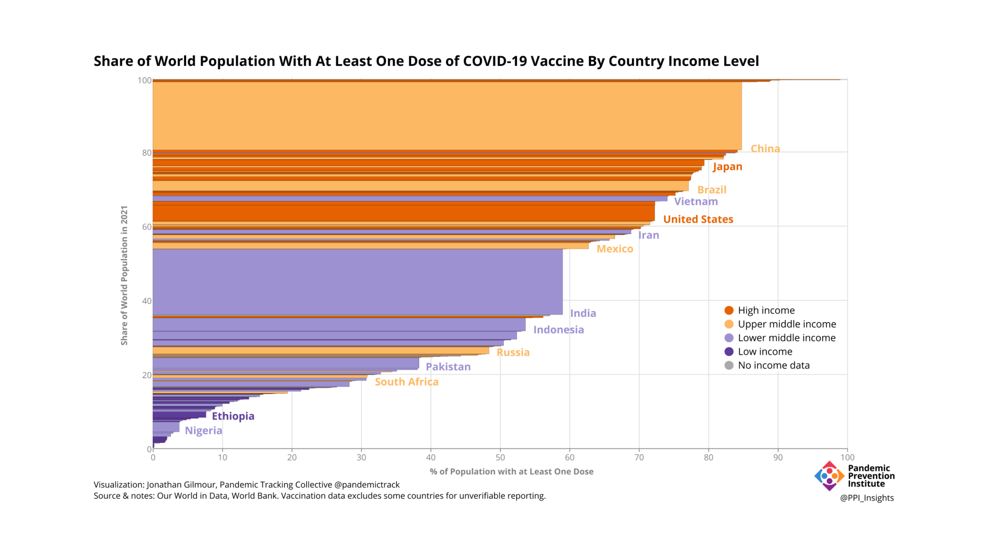
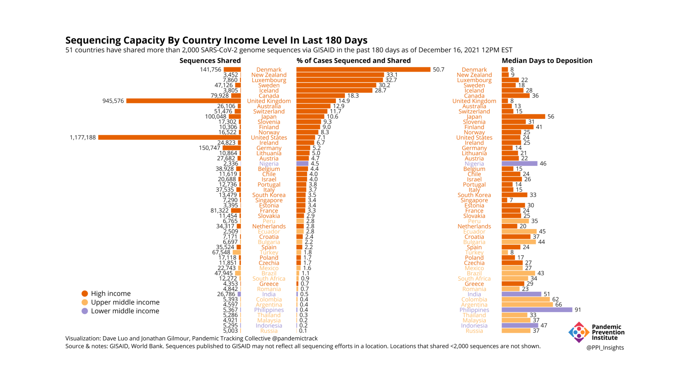
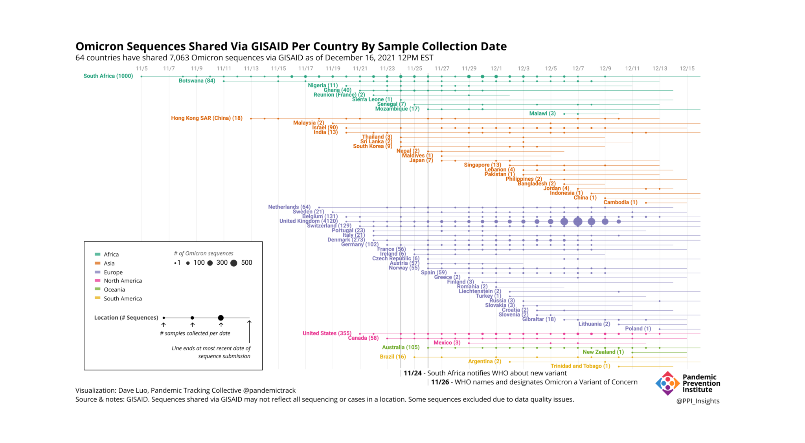

Vaccine Inequity Increases the Risk of New SARS-CoV-2 Variants Emerging
Robust genomic surveillance, along with transparency, communication, and global collaboration, is needed to detect and control emerging variants.
This piece is originally published at rockefellerfoundation.org/case-study/vaccine-inequity-increases-the-risk-of-new-sars-cov-2-variants-emerging/
To control the Covid-19 pandemic, the World Health Organization (WHO) called on member states to meet a goal of vaccinating 40% of their population by the end of 2021. As of mid December 2021, over 8.6 billiondoses have been administered globally. Unfortunately, the distribution of vaccines has been far from uniform, with the percentage of populations fully vaccinated ranging from more than 90% to less than 1%. Predictably, those countries on the high end tend to be wealthy nations, while those at the low end tend to be low- and lower-middle income countries. In fact, 73% of all vaccines administered have gone to high- and upper-middle-income countries. Fewer than 20% of African countries are on track to meet the 40% goal, and 6 times as many booster doseshave been administered worldwide as first doses in low income countries. This makes the challenge of reaching the WHO’s next milestone of vaccinating 70% of the populations of all countries by mid-2022 even more daunting. The inequitable distribution of vaccines is not just a practical problem for undervaccinated countries. Beyond being a moral imperative, vaccine equity is a global concern. As long as these inequities persist anywhere in the world, everyone, regardless of where they live or their own vaccination status, will continue in the current state of global crisis.
Vaccination rates

Global inequities in access to Covid-19 vaccines reflect entrenched flaws in current approaches to financing for health, pandemic preparedness, and the vaccine supply chain. Pharmaceutical companies resist technology transfer and waivers of trade-related intellectual property. Vaccine “nationalism” sees high-income countries hoarding doses. Investment in the human resources and infrastructure needed for resilient health systems has lagged for decades. Vaccine hesitancy, often fueled by mis- and disinformation, inhibits vaccine uptake in all countries; yet, in countries reliant on donor funding, it is sometimes erroneously cited as a cause for low coverage, rather than a challenge to be tackled with robust resources and coordinated, well-informed programs.
When low- and lower-middle-income countries lack access to the resources they need for vaccination programs, they are at high risk for Covid-19 surges. Furthermore, the finances and underlying infrastructure to respond effectively to the disease are already severely constrained. Vital resources, like well-staffed and well-equipped intensive care units, oxygen supplies, and personal protective equipment (PPE) for health care workers, are all stretched to their limits. This taxes already-overburdened health systems, diverting staff and stockpiles away from other essential programs, resulting in negative downstream health consequences. Longstanding services for infectious diseases like tuberculosis, malaria, and HIV, as well as noncommunicable diseases like cancer and diabetes, have been severely disrupted during Covid-19. Well-established childhood immunization campaigns—one of the defining successes of global health—have suffered, with an estimated 22 million children worldwide missing their first measles vaccine in 2020, the largest drop in 20 years. Fueled by limited access to vaccines and a lack of programs that support uptake, the pandemic in low- and lower-middle income countries can become a vicious cycle. Covid-19 cases surge, straining already overburdened health systems and exacerbating conditions that may allow Covid-19 infections and deaths to increase further.
With largely unvaccinated populations, and large numbers of inhabitants living in extreme poverty, low- and middle-income countries are vulnerable to frequent Covid-19 outbreaks and rapid and widespread circulation of virus. This sets the stage for the emergence of viral variants. Variants can also arise in immunocompromised individuals who develop chronic SARS-CoV-2 infections, which may be more likely when they do not receive appropriate treatment because of disruptions in health programs. When variants emerge anywhere, the global risk escalates for all people, regardless of income or geography. Local emergence of variants like Alpha and Delta quickly evolved into a global problem. Omicron may do the same.
Detection and tracking of variants requires genomic sequencing, that is, determining the genetic code of the entire virus. Sequencing is more complex than diagnostic testing, and requires specialized equipment and trained personnel.** Scientists have estimated that effective genomic surveillance requires sequencing 5% of cases at a minimum and 25-30% of cases for ideal surveillance coverage. Many countries lack the ability to perform that kind of surveillance.** In fact, 41 mostly low- and lower-middle-income countries have not submitted any sequences to GISAID in the past 180 days based on an analysis of GISAID and World Bank data.
Sequencing capacity

Sequencing capacity varies greatly based on income level, what % of cases are sequenced, how many sequences are shared, and submission latency. Of these, high income countries are alone in the capacity to sequence more than 5% of cases. It is important to note that political constraints and legitimate concerns around the benefits of sharing data may also affect the percentage of cases sequenced, beyond strict capacity limits.]
Variants emerging in areas lacking both vaccination and genomic surveillance may have the chance to become widespread before they can be detected and contained. The Delta variant, currently the dominant strain worldwide, was first identified in late 2020 in India, but was not recognized as a public health threat until March 2021, in part because India was sequencing less than 1% of positive samples. It is now the dominant variant globally.
In sharp contrast to the timeline for identifying Delta, the identification of a new Variant of Concern, dubbed Omicron by the WHO, happened swiftly. This illustrates the importance of effective genomic surveillance and rapid response to potentially significant variants.
Omicron first came to light when some PCR tests in laboratories in South Africa and Botswana gave an unusual result called S Gene Dropout or S-Gene Target Failure (SGTF). Some PCR test kits are designed to detect parts of three different genes in SARS-CoV-2. The virus samples these labs were testing were missing a part of the spike gene detected by this test, so it gave a negative result on one of the three parts of the test. When these S-gene dropout results were reported, researchers at the Network for Genomic Surveillance in South Africa (NGS-SA) had been investigating an uptick in cases in the Gauteng province of South Africa. They found the same S-gene dropout in nearly all of the Gauteng samples.
While S-gene dropout can act as a proxy, it is not a definitive identification of Omicron. Other variants also possess this spike gene deletion, including the Alpha variant (which has decreased markedly since its April 2021 global peak, but is still circulating—as indicated by submissions to GISAID.) In addition, a sublineage of Omicron has recently been identified that lacks this particular gene deletion, and thus cannot be detected by the S-gene dropout. Sequencing of the entire viral genome is still needed. When the samples that gave the unusual result were sequenced, they showed an exceedingly large number of mutations, many of them known to affect transmissibility and immune evasion. Nearly all of the samples from Gauteng gave similar results. This new variant was different from any variant previously sequenced.
The variant, assigned to Pango lineage B.1.1.529, was detected the afternoon of November 23 and at a press briefing 36 hours later, Professor Tulio de Oliveira, director of the KwaZulu-Natal Research Innovation and Sequencing Platform (KRISP) announced the new variant to the world on behalf of NGS-SA. (Professor de Oliveira also identified the Beta variant.) The next day, November 26, the WHO designated it as a Variant of Concern and named it Omicron.
Given this early alert, scientists immediately began studying Omicron to determine how the mutations affect the way Omicron spreads, causes disease, and responds to vaccines and treatments. The results of some of these epidemiological and laboratory studies take several weeks to yield definitive results. In the meantime, the publicly shared information and genetic sequences allow researchers and public health officials around the world to rapidly identify Omicron cases, understand the chronology and geography of its spread, and accelerate our global response. While it is too early to know what the ultimate ramifications of Omicron will be with regard to transmissibility, virulence, or immune evasion, as of mid-December 2021, the wave largely attributed to Delta continues to cause a daily average of over 625,000 cases and 7,200 deaths worldwide.
Omicron sequences

The excellent work of South African scientists and other contributing researchers shows how effective genomic surveillance can be at identifying and tracking variants and enabling a rapid response. The value of genomic surveillance can be further enhanced by expanding it to underserved populations, both domestically and globally. The swift announcement of Omicron was a benefit to the global community, yet it was met with travel bans against African nations, without comparable bans on other countries with documented Omicron cases. These bans have been criticized by scientists as being ineffective, inhibiting the very transparency that had alerted the world to the variant, and interfering with the ability of researchers to study it. Inequitable application of policies is yet another facet of the global imbalance that fuels pandemics.
In spite of these persistent issues, a steady expansion of genomic surveillance capabilities around the world will aid global surveillance efforts. The Africa CDC’s Institute of Pathogen Genomics is playing a crucial role in coordinating and supporting expansion of capabilities and data sharing, and comparable programs have been initiated to improve genomic surveillance in other low- and lower-middle-income regions. The Rockefeller Foundation, through its Pandemic Prevention Institute, is supporting initiatives in India, at the University of Ghana’s West African Centre for Cell Biology of Infectious Pathogens, and at the Nigeria-based Africa Centre for Excellence in Genomics of Infectious Disease. The Pandemic Prevention Institute is also supporting the work of The Centre for Epidemic Response and Innovation (CERI), a consortium of public health officials, scientists and clinicians associated with the South African Medical Research Council (SAMRC), the Department of Science and Innovation (DSI), Stellenbosch University and the University of KwaZulu-Natal (UKZN). Headed by Professor de Oliveira, CERI has the goal of improving genomic surveillance on the African continent. In addition to its own sequencing technology, CERI’s Genomics Africa Fellowship Program is training scientists from countries throughout Africa, who can then support genomic surveillance in their own countries.
This expanded capability will help support the ability to track Covid-19 and guide responses in some regions, and additional public and private investment in surveillance initiatives are still needed to provide effective global surveillance. Genomic surveillance alone will not, however, solve the problem of continued spread caused by low vaccination rates and resulting high transmission rates. Scaling up genomic surveillance and swift data sharing depends on countries and communities seeing the benefits of sharing information—including access to the resources needed to respond. The emergence of the Omicron variant has illustrated to the world the need for vaccine equity and global genomic surveillance. Programs that expand sequencing capacity will aid in attaining comprehensive surveillance. Controlling the pandemic depends on using genomic data to track the virus, as well as taking the steps needed to end the inequities that contribute to the emergence of variants that may threaten the globe.